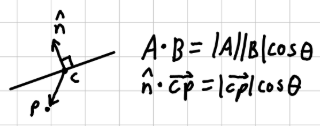
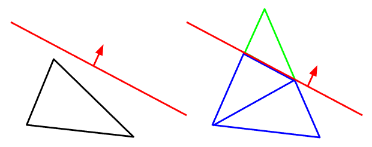
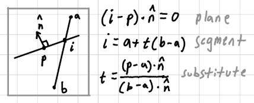
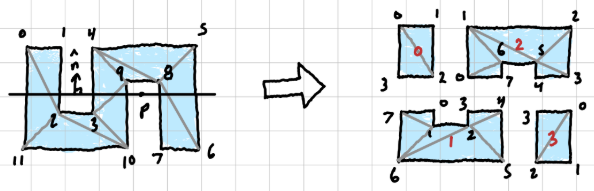
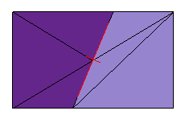
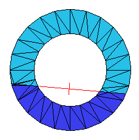
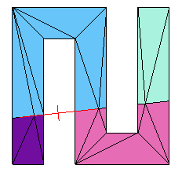

• Drag the left cursor to set the split plane.
• Press W to toggle wireframe rendering.
For this project, I wanted to experiment with the procedural splitting of meshes.
The core algorithm of this project revolves around the clipping of triangles about a plane. To determine which side of the plane a vertex is on, the dot product can be used. Let c be any point on the plane, with n as its normal. Let p be an arbitrary point in space. If this dot product is greater than zero, p is front of the plane, else behind.

This isn't the whole story. There are a few cases that we need to cover. There is the case that the plane completely misses the triangle. If this happens, the side that its on is the mesh that it gets sent to. This accounts for 90% of the triangles, but if it splits the triangle, then a new triangle and quadrilateral need to be formed. (note: the other cases are symmetries of the ones shown.)

This is done using a segment-plane intersection to find where along the segment the plane hits. The vertexes are split between two meshes: one in front of the plane, and one behind. Then those indexes are stored in a map for later retrieval.

Once that front and back mesh are constructed, there are possibilities for a mesh to be disjointly connected. The adjacencies are predicated by the triangles. A floodfill/part seperation algorithm is used to then distinguish the islands.



